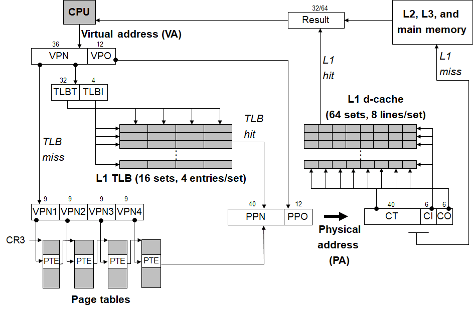

虚拟内存
为了更加有效地管理内存并且少出错，现代系统提供了一种对主存的抽象概念，叫做虚拟内存。虚拟内存是硬件异常、硬件地址翻译、主存、磁盘文件和内核软件的完美交互，它为每个进程提供了一个大的、一致的和私有的地址空间。通过一个很清晰的机制，虚拟内存提供了三个重要的保护能力：
- 它将主存看成一个存储在磁盘上的地址空间的高速缓存，在主存中只保留活动区域，并根据需要在磁盘和主存之间来回传送数据，通过这种方式，它高效地使用了主存。
- 它为每个进程提供了一致的地址空间，从而简化了内存管理。
- 它保护了每个进程的地址空间不被其他进程破坏。
物理和虚拟寻址
计算机系统的主存被组织成一个由M个连续的字节单元组成的数组。每字节都有一个唯一的物理地址。第一个字节的地址为0，接下来的字节地址为1，再下一个为2，依此类推。CPU访问内存的最自然的方式就是使用物理地址，称为物理寻址。然而，现代处理器使用一种的是一种称为虚拟寻址的寻址形式。使用虚拟寻址，CPU通过生成一个虚拟地址来访问主存，这个虚拟地址被送到内存之前先转换成适当的物理地址。将一个虚拟地址转换为物理地址的任务叫地址翻译。就像异常处理一样，地址翻译需要CPU硬件和操作系统之间的紧密合作。CPU芯片上叫做内存管理单元（MMU）的专用硬件，利用存放在主存中的查询表来动态翻译虚拟地址，该表的内容由操作系统管理。
地址空间是一个非负整数地址的有序集合，这里为了方便，假设地址空间中的整数都是连续的，也就是说，是一个线性地址空间。物理地址空间，它对应于系统中物理内存的M个字节，而虚拟地址空间的大小，通常和计算机的地址总线大小有关，虚拟地址空间的大小为,n在现在系统中，通常是32或64。
虚拟内存作为缓存的工具
虚拟内存作为缓存的工具，和前面讲的缓存几乎是一样的，所以这里就重点介绍几个概念。
- 物理页和虚拟页。如果磁盘和主存传递数据单元是字节，效率就太低了。虚拟地址空间被分割为称为虚拟页的大小固定的块来作为数据的传输单元，类似的，物理内存被分割为相同大小的块，称为物理页。
- 页表。页表将虚拟页映射到物理页。一个页面是一个页表条目（PTE）的数组。页表条目使用虚拟地址查找，条目的内容需要根据有效位确定。有效位，表示是否在主存中，有效且条目的地址不为空，表示物理页在主存的起始地址；有效但地址为空，表示虚拟页面还没有被分配。如果无效，条目的内容表示该虚拟页在磁盘上的起始位置。
- 页命中和缺页。缓存命中和不命中的另一种说法。
- 按需页面调度。在磁盘和内存之间传送页的活动叫做交换或者页面调度，分为换入和换出；当不命中发生时，才换入页面的策略称为按需页面调度。
虚拟内存作为内存管理的工具
按需页面调度和独立的虚拟地址空间的结合，对系统中内存的使用和管理造成了深远的影响，主要有以下几点：
- 简化链接。独立的地址空间允许每个进程的内存映像使用相同的基本格式，而不管代码和数据实际存放在物理地址的何处。
- 简化加载。要把目标文件中的.text和.data节加载到一个新创建的进程中，Linux加载器为代码和数据段分配虚拟页，把它们标记为无效的，将页表条目指向目标文件中适当的位置。这样就可以实现加载。
- 简化共享。可以将不同进程中适当的虚拟页面映射到相同的物理页面，从而安排多个进程共享这一部分区域。
- 简化内存分配。使用了虚拟内存，需要分配k个页面内存的时候，对应分配的物理页面可以不是连续的，并且可以随机分散在物理内存中。
虚拟内存作为内存保护的工具
因为每次CPU生成一个地址时，地址翻译硬件都会读一个PTE，所以通过在PTE上添加一些额外的许可位来控制对一个虚拟页面的内容的访问十分简单。如Intel i7的一级页面中有R/W字段，表示读写权限，U/S字段表示是否为超级用户权限，XD字段表示是否能够从页面中加载指令。
地址翻译
关于地址翻译，还需要了解以下两个概念：
- TLB（翻译后备缓冲器）。因为PTE是存在主存中的，访问主存比较耗时，所以使用一个高速缓存对对PTE数据进行缓存。
- 多级页面。对于64位的系统来说，单级页表所占用了内存太多了，所以需要通过使用多级页表压缩页表。
地址翻译的大致的过程为，
- CPU产生一个虚拟地址，将其划分为VPN和VPO。
- MMU使用VPN查找PPN，先把VPN分为TLBT和TLBI，去TLB中查找，缓存命中则返回PTE。
- 若TLB缓存不命中，去主存的页表中查询，并返回PTE。
- MMU取出PTE中的PPN，PPN连接上PPO，构成物理地址，并将它发送到高速缓存/主存。
- 高速缓存将数据返回给CPU。
这个过程如下图所示。

内存映射
Linux通过将一个虚拟内存区域区域与一个磁盘上的对象关联起来，以初始化这个虚拟内存区域的内容，这个过程称为内存映射。虚拟内存区域可以映射到两种类型的对象中的一种：1，Linux文件系统中的普通文件：一个区域可以映射到一个普通磁盘文件的连续部分，例如一个可执行的目标文件。2，匿名文件：一个区域也可以映射到一个匿名文件，匿名文件是由内核创建的，包含的全是二进制零。
一个对象可以被映射到虚拟内存的一个区域，要么作为共享对象，要么作为私有对象。如果一个将一个共享对象映射到它的虚拟地址空间的一个区域内，那么这个进程对这个区域的任何写操作，对于那些也把这个共享对象映射到它们的虚拟内存的其他进程而言，也是可见的。而且，这些变化也会反映在磁盘上的原始对象中。另一方面，对于一个映射到是私有对象的区域做的改变，对于其他进程来说是不可见的，并且这个进程对这个区域所做的任何写操作都不会反映在磁盘上的原始对象中。私有对象使用了一种写时复制的技术，即如果只是读的话，那么会和其他的虚拟内存共享，如果有写操作，就会为其复制一份。
使用内存映射的一个作用就是可以使用指针方便地操作文件：
/* 通过内存映射修改文件内容 */
int main(int argc,char *argv[]){
if(argc < 2){
fprintf(stderr,"argc less than 2\n");
exit(0);
}
int fd;
fd = open(argv[1],O_RDWR,0);
if(fd < 0){
fprintf(stderr,"open file fail\n");
exit(0);
}
/* 把文件进行截断 */
ftruncate(fd,1024);
char *p = NULL;
p =(char *)mmap(NULL,1024,PROT_WRITE,MAP_SHARED,fd,0);
if(p == MAP_FAILED){
fprintf(stderr,"mmap fail\n");
exit(0);
}
strcpy(p,"After the mmap function call\n");
return 0;
}
使用内存映射的另外一个作用就是实现非血缘关系的进程间的通信：
struct student{
int id;
char name[20];
int age;
};
int main(int argc,char *argv[]){
int fd = open(argv[1],O_RDWR|O_CREAT,0);
ftruncate(fd,1024);
struct student student = {1,"李明",24};
struct student *p =(struct student*)mmap(NULL,1024,PROT_WRITE,MAP_SHARED,fd,0);
while(1){
p->id = student.id;
strcpy(p->name,student.name);
p->age = student.age;
student.id++;
sleep(1);
}
return(0);
}
int main(int argc,char *argv[]){
int fd = open(argv[1],O_RDONLY,0);
struct student *p =(struct student*)mmap(NULL,1024,PROT_READ,MAP_SHARED,fd,0);
sleep(3);
while(1){
printf("id = %d,name = %s,age = %d\n",p->id,p->name,p->age);
sleep(1);
}
return 0;
}
简单的说明一下，一个程序把一个学生结构体的内容写入内存映射区域，一个程序不停地读取，可以看到的现象是，打印学生的信息一直增加。为了简单起见，这里省略了头文件和错误处理。除此之外，还有通过文件的方式实现进程间的通信，但实质上，内核也自动调用了内存映射这种方式来提高效率。
最后一个例子是关于加载二进制文件并执行的例子。先说说如果制作二进制文件，有如下的代码：
int add(int a, int b){
return a + b;
}
使用如下的命令生成二进制文件：
gcc -c add.c -o add.o
ld add.o --oformat binary -o add.bin
主程序：
#include <stdio.h>
#include <sys/mman.h>
#include <sys/types.h>
#include <sys/stat.h>
#include <fcntl.h>
typedef int(*FP)(int a,int b);
int main(){
int fd = open("add.bin",O_RDONLY,0);
char *s = mmap(NULL,1024,PROT_EXEC|PROT_READ,MAP_PRIVATE,fd,0);
FP fp = (FP)s;
printf("result = %d\n",fp(1,2));
return 0;
}
运行的结果就是，二进制文件能正确运行。